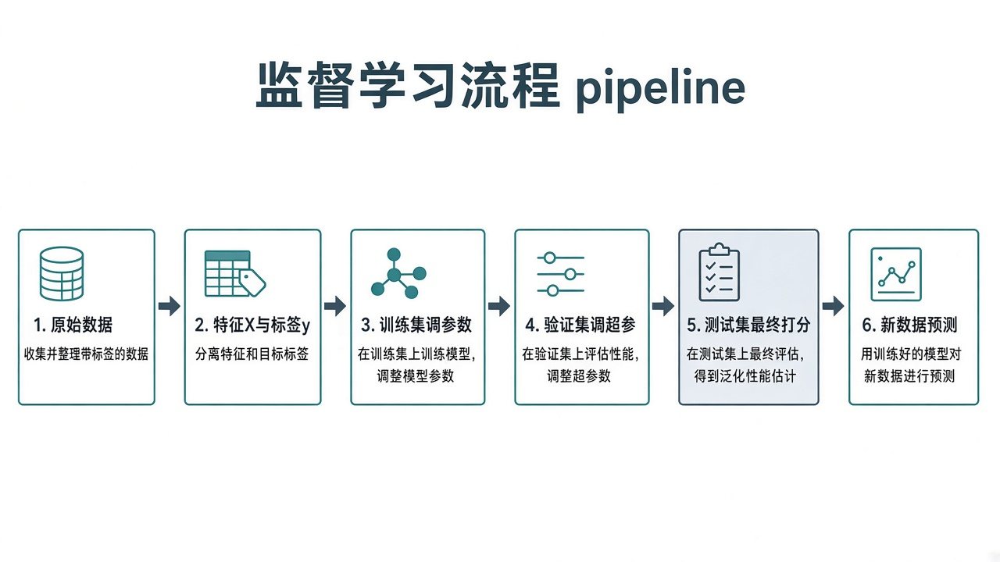
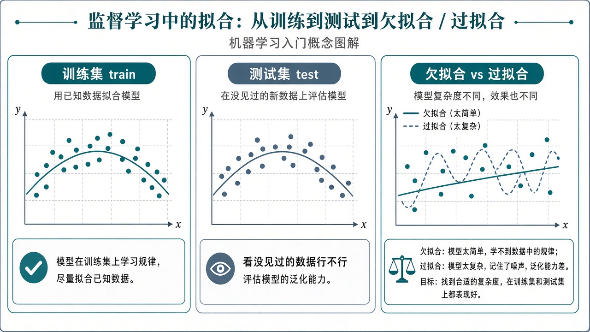
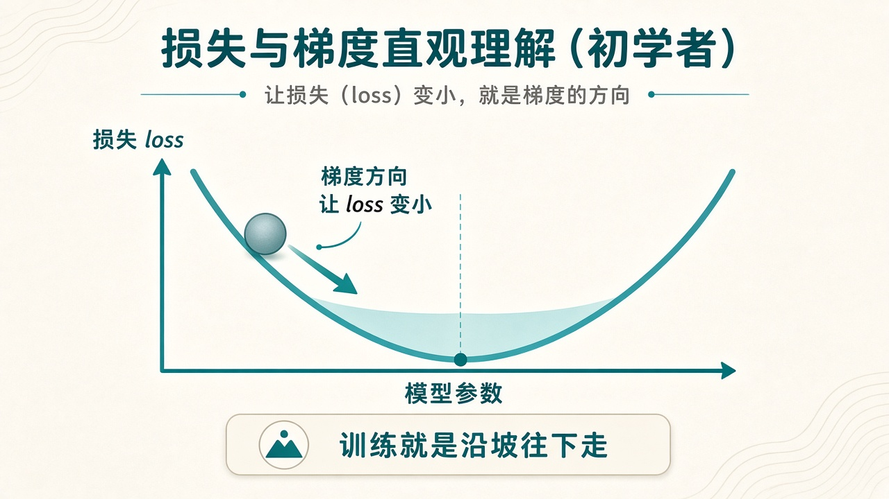

0. 怎么学 · 前置
请先完成 Python 底子 与 数据与计算。本章代码用到：能跑脚本、numpy、matplotlib。
- 先建立画面，再记英文词。 例如先理解「考试题不能提前练」，再记 test set。
- 每节结束做「一句话复述」。说不利索 = 还没过关。
- 实验部分必须自己改数字跑，只看不做等于没学。
建议时间：概念阅读 3–5 小时 + 实验 2–4 小时。可拆成 3–4 天。
本章不讲：反向传播手推、SVM 推导、概率论大全。那些留到以后需要时再补。现在目标是「上课/看论文代码时名词不懵」。
1. 先看一张总流程图
整章内容可以串成一条流水线。先有全局，再看零件。

- 拿到带答案的数据 → 拆成特征与标签
- 切成训练 /（验证）/ 测试
- 在训练集上反复：预测 → 算 loss → 用梯度更新参数
- 用验证集帮你选超参数、决定何时停
- 最后用测试集估一次「真实水平」
- 部署后：只给新的 X，模型给出预测（没有标准答案可对时，就要靠线下业务指标）
2. 模型在学什么
一句话：模型在学一个「从输入到输出」的可调规则；训练 = 根据数据把规则里的数字旋钮拧到更合适。
2.1 三个角色
- 输入（input / 特征）：模型看见的东西——图片像素、表格里的列、文本变成的数字向量……
- 输出（output / 预测）：模型给出的回答——类别、数值、概率……
- 参数（parameters / 权重）：规则内部的旋钮。训练前往往是随机或默认值；训练后变成「更会做这类题」。
2.2 和传统编程差在哪
- 传统编程：人写死
if规则。例如「面积 > 90 且地铁近 → 贵」。 - 机器学习：人提供大量例子；机器自己找规律。规则可能复杂到人写不出来，但可以用数据「拟合」出来。
2.3 生活类比
学骑车：不是背「第 3 秒把手转 12 度」，而是在一次次摔倒里把身体参数调对。机器学习也是：用错误（loss）当反馈，一点点改参数。
别说成：「模型把训练集背下来了所以会了。」背下来叫死记，遇到新题会崩——那是过拟合。我们要的是泛化：新数据也大致正确。
一句话复述：「训练不是背答案，是调参数，让没见过的题也尽量答对。」
3. 任务类型：回归与分类
入门先分清两大类（名字会在代码、论文、作业里反复出现）：
- 回归 regression：预测连续数值。房价、温度、年龄估计。
- 分类 classification：预测类别。垃圾邮件/正常邮件、猫/狗、病情有/无。
还有排序、生成、检测等，先按下。选什么样的 loss、指标，常和任务类型绑定。
# 回归：输出一个数
y_reg = 128.5 # 万元房价
# 分类：输出类别（或各类概率）
y_cls = "dog" # 或数字编号 1
# 概率形式：[0.1, 0.9] 表示猫 0.1 / 狗 0.9动手口述：举一个你专业里的回归例子、一个分类例子。
4. 特征 X 与标签 y
监督学习的一条样本，通常长这样：
- X（features）：用来预测的信息
- y（label）：正确答案 / 监督信号
4.1 表格例子
# 每一行是一个样本
# 特征：面积、房龄；标签：房价
# X shape 直觉：(样本数, 特征数)
X = [
[50, 10],
[60, 5],
[80, 2],
]
y = [120, 140, 200]4.2 图像例子（直觉）
一张 RGB 图可以想成很大的数字表。标签可能是「猫」「狗」。深度学习会自动从像素里抽出有用特征，但「有 X、有 y、要学映射」这件事不变。
4.3 标签从哪来
人工标注、业务系统记录、实验测量……标签错了，模型会学错。入门项目先用干净公开数据；自己标数据时要意识到：垃圾进，垃圾出。
坑：把「学号、姓名」之类不当特征塞进 X，或把未来才知道的信息泄漏进特征（数据泄漏）。训练分会虚高，上线翻车。
5. 训练 / 验证 / 测试
如果同一批题既拿来练习又拿来当期末考，分数会骗人。机器学习一样。
- 训练集 training set：真正用来更新参数的数据。
- 验证集 validation set：训练过程中帮忙选超参数、做早停、比模型；不直接拿来算梯度更新（常规设定下）。
- 测试集 test set：最后估一次泛化表现；不要天天盯着它调参，否则它也慢慢变成「练过的题」。

小项目现实做法：数据很少时，先做 train/test 两分；课设或认真调参再加 val。K 折交叉验证是进阶工具，先知道名字即可。
一句话复述：「训练集用来学，验证集用来选，测试集用来最终验收。」
6. 怎么切分数据（操作直觉）
- 常见比例：train:test = 8:2 或 7:3；若有 val，可 7:1.5:1.5 或 8:1:1（示意）。
- 随机打乱再切，避免数据原本按类别/时间排好导致某一折全是同一类。
- 固定随机种子（如
np.random.seed(0)），方便复现实验。 - 分类任务尽量分层抽样（各集合里类别比例差不多）。
- 时间序列常按时间切，不能随机打乱未来泄漏到过去——有这类数据时问老师。
import numpy as np
np.random.seed(0)
idx = np.arange(100)
np.random.shuffle(idx)
train_idx = idx[:80]
test_idx = idx[80:]
print(len(train_idx), len(test_idx))坑：先用全部数据算均值做标准化，再切分——测试信息泄漏进预处理。更稳妥：只在训练集上 fit 预处理，再应用到 val/test。
7. 过拟合与欠拟合
7.1 定义（人话）
- 欠拟合 underfitting：太简单或练不够，训练集都表现差。
- 过拟合 overfitting：把训练集（含噪声）记太死，换测试集就差。典型：train 很好，test 明显变差。
- 刚好：train 与 test 都还行，差距不大（具体多少算「大」看任务）。
7.2 你怎么察觉
- 画 train loss 与 val loss：val 长期变差而 train 仍在降 → 过拟合嫌疑
- 准确率：train 99%，test 60% → 很可疑
7.3 常见应对（先记菜单）
- 更多/更干净数据；数据增强（图像翻转等）
- 更简单模型；正则；Dropout
- 早停（val 变差就停）
- 别把测试集当调参玩具
下一章写 PyTorch 时会碰到其中几项；现在先能看图诊断。
8. 指标：准确率等（和 loss 分工）
- loss：训练时的指南针，必须可导（对常用优化方式而言），方便算梯度。
- 指标 metric：给人看的成绩，如准确率、精确率/召回率、RMSE……不一定直接拿来反传。
# 准确率直觉：对的条数 / 总条数
y_true = np.array([0, 1, 1, 0])
y_pred = np.array([0, 1, 0, 0])
acc = (y_true == y_pred).mean()
print(acc) # 0.75类别极不均衡时：99% 都是「正常」，模型全猜正常也能准确率很高——这指标会骗人。后面会遇到 F1 等，先知道有这个坑。
9. 损失 loss 细讲
loss 把「错得有多离谱」收成一个数。训练目标：让它变小。
9.1 回归常用：MSE
pred = np.array([10.0, 8.0])
true = np.array([12.0, 8.5])
mse = np.mean((pred - true) ** 2)
print(mse)差得越远，平方后惩罚越大。
9.2 分类常用：交叉熵（直觉）
模型输出各类概率。若真标签是「狗」，却把很大概率分给「猫」，惩罚就重。细节公式下一章用框架时再碰到；现在记住：概率越自信地错，loss 往往越大。
9.3 loss 与指标不同步
有时 loss 降了，准确率暂时不动——正常，可能在边界附近微调。两边一起看更稳。
复述：「loss 指导训练；准确率报告给人。两者相关，但不永远同步。」
10. 梯度、学习率、参数更新
把 loss 看成山谷，参数是位置。梯度指出升得最快的方向；更新时常反方向走一小步，让 loss 下降。

10.1 更新公式（只需认形状）
# 伪代码
# param = param - lr * grad
w = w - lr * dw
b = b - lr * dbgrad / dw：这个参数对 loss 的「敏感方向」lr：步长。常用从1e-3试起，再看曲线调
10.2 学习率太大 / 太小会怎样
- 太大：loss 震荡、变 NaN、直接爆炸
- 太小：降得极慢，像没训练
- 合适：整体有下降趋势（可有小震荡）
优化器：SGD、Adam 等是「怎么根据梯度迈步」的策略。入门先会用默认 Adam/SGD；原理以后再挖。
11. epoch 与 batch
- epoch：把整个训练集完整过一轮（大致含义）。
- batch（小批量）：每次只用一小撮样本算梯度并更新。省内存，也带来一点噪声，有时反而有助泛化。
- batch size：每撮多少条。太大可能显存不够；太小更新很吵、更慢。
- iteration / step：更新一次参数算一步。一个 epoch 里通常有多个 step。
# 直觉：1000 条训练样本，batch_size=100
# 则大约每个 epoch 有 10 次参数更新下一章对照：训练循环里 for epoch，里面再 for batch，就是这个结构。
12. 参数与超参数
- 参数：训练中自动更新，如权重 w、偏置 b、卷积核……
- 超参数：训练前你定：学习率、batch size、epoch 数、网络层数、是否 Dropout……
调参流程直觉：改超参数 → 重新训练 → 看 val 指标 / 曲线 → 再改。测试集留到最后。
坑：在测试集上反复试超参数，等于变相把测试集变成验证集，最终报告会偏乐观。
13. 怎么读 loss 曲线
- 平滑下降后趋稳：常见健康形状
- 一直不降：lr 太小、学不动、数据/标签问题、实现 bug
- 剧烈震荡：lr 偏大、batch 太小等
- 变 NaN：数值爆炸，先降 lr、查数据是否有异常值
- train 降、val 升：过拟合信号，考虑早停或加正则
第二章你会画单条 loss；第四章起尽量同时画 train 与 val。
14. 迷你实验 A：拟合直线
不用深度学习框架，只用 NumPy 体会「预测 → loss → 梯度 → 更新」。新建 ch03/fit_line.py。
import numpy as np
import matplotlib.pyplot as plt
np.random.seed(0)
X = np.linspace(0, 1, 40)
y = 2 * X + 1 + 0.1 * np.random.randn(len(X))
w, b = 0.0, 0.0
lr = 0.1
losses = []
for epoch in range(80):
pred = w * X + b
err = pred - y
loss = np.mean(err ** 2)
losses.append(loss)
dw = 2 * np.mean(err * X)
db = 2 * np.mean(err)
w -= lr * dw
b -= lr * db
print(f"learned w={w:.3f}, b={b:.3f}")
plt.figure()
plt.plot(losses)
plt.xlabel("epoch")
plt.ylabel("loss")
plt.title("loss curve")
plt.grid(True)
plt.tight_layout()
plt.savefig("ch03_loss.png", dpi=150)
print("saved ch03_loss.png")理想情况：学到的 w、b 接近 2 和 1；loss 曲线总体下降。
完成 0 / 3 步
15. 迷你实验 B：改学习率对比
把上面的 lr 分别改成 0.01、0.1、2.0（或更大），各跑一次，保存不同文件名，对比曲线与最终 w、b。
- 太小：降得慢，也许 80 epoch 还没到位
- 适中：较快接近 2 和 1
- 太大：可能震荡、发散、数字很离谱
完成 0 / 3 步
过关自检
完成 0 / 12 项
全部勾完，再进入下一章「深度学习入门（PyTorch）」。
常见错误说法（对照纠偏）
- 「准确率高就是模型好」→ 看是否类别均衡、是否看了测试集、业务代价是否一样。
- 「loss 越低一定越好」→ 过拟合时 train loss 可以极低；要看 val/test。
- 「多训练一定会更好」→ epoch 太多可能过拟合；要配合验证与早停。
- 「梯度就是正确答案」→ 梯度是局部方向信息，加学习率才变成一步更新。
- 「超参数可以靠感觉一次定死」→ 通常要实验；记录每次改动与曲线。
用 AI 学这一章
概念题：要求先比喻后术语。实验题：报告 lr 与现象，禁止直接代写实验报告。
我在学深基课第三章（机器学习直觉·细讲）。
请先打比方，再给标准术语；不要长篇堆公式。
我卡住的点：____
我目前的理解：____
请指出错的一句，并给更正后的一句话版本。
（实验）
lr=____，现象：____
请给 2 个最可能原因，不要重写全部代码。